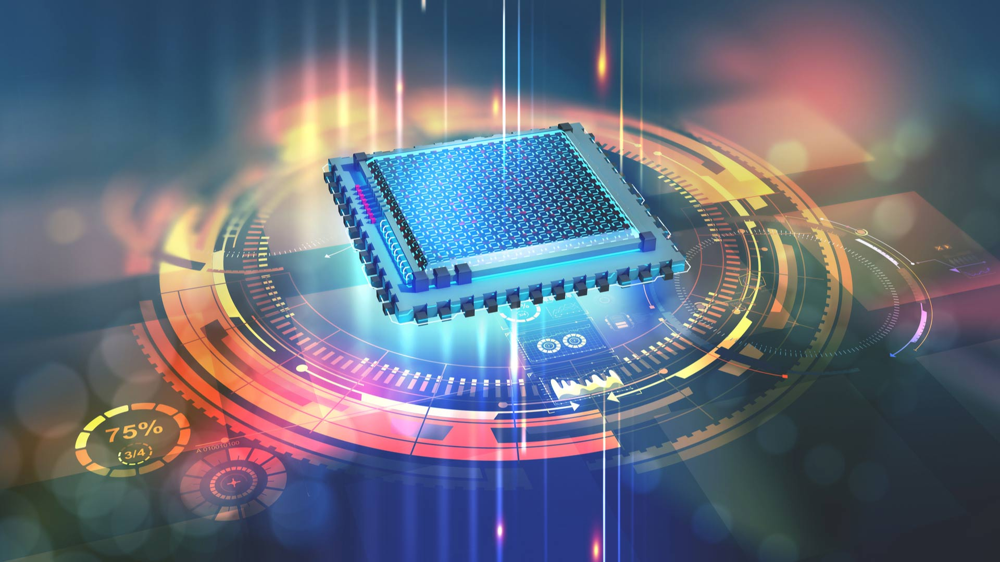

Estado y precisión
El documento describe la fragilidad de los estados cuánticos ante interferencias externas, conocida como decoherencia.
Tecnología · Ciencia · Sociedad
Una mirada a las tecnologías emergentes y a las decisiones humanas que las acompañan.
El briefing presenta una transición desde la computación clásica hacia la cuántica y una inteligencia artificial que podría tener un papel cada vez más presente en la vida cotidiana.
Las fechas y proyecciones que aparecen aquí son las expuestas en el documento de referencia.
La computación cuántica no pretende sustituir a los equipos clásicos en las tareas cotidianas. Su interés está en abordar problemas específicos que resultan muy complejos para la lógica tradicional.
El documento describe la fragilidad de los estados cuánticos ante interferencias externas, conocida como decoherencia.
Los equipos clásicos trabajan con bits (0 o 1). Los cuánticos emplean qubits, que pueden aprovechar propiedades como la superposición y el entrelazamiento.
El briefing explora una IA que puede pasar de herramienta de procesamiento a agente personal, asistente proactivo y posible compañía emocional.
El concepto de “Constanza” describe una IA que podría funcionar como memoria y asistente personal.
Se mencionan desafíos como la dependencia emocional, los sesgos algorítmicos y la necesidad de regulación.
La propuesta plantea actualizar las reglas sociales para considerar la naturaleza y las inteligencias no humanas.
Se propone utilizar sistemas de IA supervisados para analizar contratos públicos.
El pacto de los tres tercios distribuye los beneficios extraordinarios entre pensiones, mantenimiento tecnológico y beneficio empresarial.
El documento defiende la ciencia abierta y destaca la importancia de la precisión de las mediciones.
El informe de prospectiva analiza cómo la computación cuántica y la inteligencia artificial podrían transformar la tecnología, la seguridad, la ciencia y la sociedad.
La computación cuántica se presenta como una tecnología estratégica capaz de influir en la competencia tecnológica y geopolítica entre países.
Uno de los grandes desafíos consiste en controlar la fragilidad de los estados cuánticos. La precisión y la corrección de errores son fundamentales para conseguir sistemas cuánticos más fiables.
El desarrollo de computadoras cuánticas plantea riesgos para algunos sistemas criptográficos utilizados actualmente. Por ello se plantea una transición hacia métodos de criptografía post-cuántica.
El informe diferencia la criptografía post-cuántica (PQC) de la distribución cuántica de claves (QKD). Ambas aparecen como estrategias para afrontar los nuevos desafíos de seguridad.
Los sensores cuánticos y la metrología pueden permitir mediciones de gran precisión. Estas capacidades podrían tener aplicaciones científicas y tecnológicas.
El informe plantea la necesidad de actualizar las normas sociales y regulatorias frente al avance de la inteligencia artificial y otras tecnologías emergentes.
También se analiza la posibilidad de una inteligencia artificial general y los cambios que podría producir en el trabajo, la economía y las relaciones sociales.
El informe destaca la importancia de establecer límites, supervisión y responsabilidad para que el desarrollo tecnológico tenga en cuenta sus consecuencias sociales.
Imágenes relacionadas con los temas principales.

Reproducción del episodio indicado en el desafío de Programación Web I.
Contenido organizado a partir del documento Briefing: Computación Cuántica, Inteligencia Artificial y el Nuevo Contrato Social .
El informe de prospectiva también considera los hitos de precisión y corrección de errores, los riesgos para la criptografía, las estrategias post-cuánticas, los sensores cuánticos, la regulación y las implicaciones sociales de la inteligencia artificial.